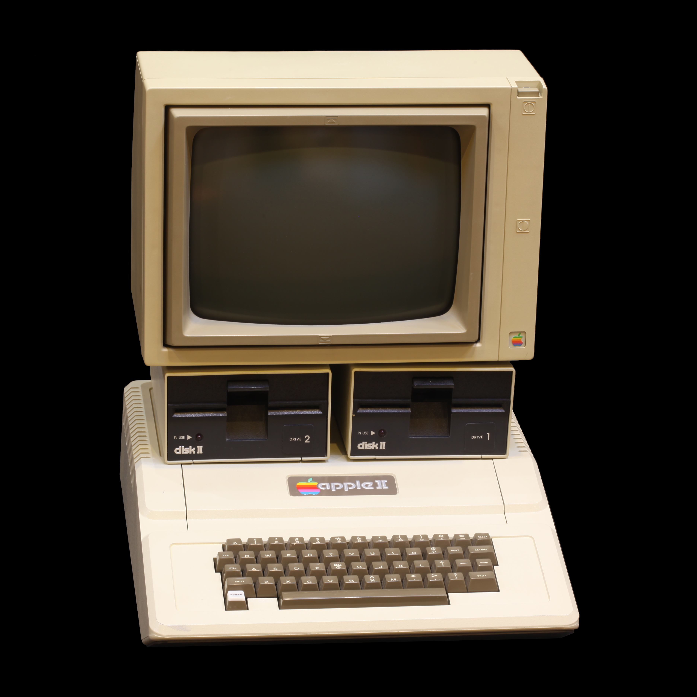

Steve Wozniak is bekend geworden door het consumentvriendlijk maken van de PC. Vroeger waren er alleen computers voor grote bedrijven.
Toen computeronderdelen steeds goedkoper werden, ontstonden er clubs waar mensen als hobby aan computers knutselden. Hij en Steve Jobs ontmoetten elkaar in zo'n club. Mensen in zo'n club probeerden computers goedkoper te maken, maar dat was voor hobbyisten en niet voor bedrijven. Steve Wozniak probeerde een computer te maken die gewone mensen konden gebruiken, die niet heel ingewikkeld was en waar je spelletjes op kon spelen. Niemand anders had dat nog geprobeerd, want mensen probeerden oude computers goedkoper te maken en niet een nieuwe makkelijker te gebruiken computer.
Toen Steve Wozniak die computer had gemaakt, de Apple I, zagen mensen dat dat heel handig was. Toen haalde Steve Jobs Steve Wozniak over om zijn computers te gaan verkopen.

In 1977 had hij de Apple II gemaakt en dat was een revolutionaire computer. Hij was 10 keer zo goed dan de Apple I met de helft van de onderdelen. Het was ook de eerste computer met kleur, terwijl niemand ooit had verwacht dat dat kon.
